Linked Open Data for Cultural Heritage
Vladimir Alexiev
Ontotext Webinar, 2016-09-29
2D presentation (O for overview, ? for help). Continuous HTML. PDF. Publications
Table of Contents
- 1. Intro
- 2. GLAM Content Standards
- 3. GLAM Metadata Schemas
- 4. GLAM Ontologies
- 5. GLAM LOD Datasets (LODLAM)
- 6. LODLAM Projects
- 6.1. Mellon "Space" Projects
- 6.2. ResearchSpace
- 6.3. British Museum (BM) and YCBA LOD
- 6.4. ConservationSpace
- 6.5. Europeana LOD and OAI PMH
- 6.6. Europeana Food and Drink
- 6.7. Getty Vocabulary Program LOD
- 6.8. J.P.Getty Museum
- 6.9. American Art Collaborative
- 6.10. European Holocaust Research Infrastructure
- 6.11. Others Projects: WikiArtHistory
- 6.12. ChartEx
- 6.13. Numismatics
1 Intro
- A bit about me: co-founder of Sirma Group Holding, Bulgaria's largest software group and parent company of Ontotext
- 30y in IT: 8 at university, 22 in industry
- Did plenty of project management, business analysis and data modeling, some big projects too
- Last 8 years focused on data modeling and integration
- Last 6 years in paricular, focused on semantic data and semantic integration
- I love to poke in other people's data and get in-depth. So there's a lot about data in these slides
- See My publications: you can sort by type and keyword, full abstracts are available.
- I've provided a few references below, but if a topic interests you, please search in the publications
- The shorter version has about 110 slides, so sit back, relax, and enjoy the ride. Should take us 1:20h
- Ask questions at any time in the chat, I'll answer them all at the end
- This longer version has 130 slides, including info about Library metadata and ontologies
1.1 GLAM vs Internet
GLAM, CH, DH?
- Cultural Heritage (CH): the sum of our non-economic heritage
- Obvious implications to economically significant sectors, eg tourism
- Some say it's the source of all creativity, would you agree?
- Includes old and new (eg digitally-born), material and immaterial, tangible and intangible, permanent and temporal (eg interactive installations)
- Galleries, Libraries, Archives, Museums (GLAM): sisterhood of institutions that care for our CH, each with its own perspective and priorities
- Digital Humanities (DH): the use of computers in the humanities.
- Eg some UK universities with DH programs: @KingsDH @UCLDH @DH_OU @CamDigHum
1.2 Google NGrams: Phrases in Books
Search for "library, museum" vs "Google, Facebook, Twitter" in books: the web sites are negligible

1.3 Google NGrams: Two Specific Orgs
Compare two specific orgs: "Facebook" is more popular in recent books, compared to "British Museum" over time

1.4 Google Trends: Search Popularity
Web searches over the last 12 years: "Facebook, Google" are much more popular than "library, museum"

1.5 How To Survive in the Internet Age?
Since ancient times GLAMs have been the centers of knowledge and wisdom
- Aren’t Google, Wikipedia, Facebook, Twitter and smart-phone apps becoming the new centers of research and culture (or at least popular culture)?
- Will GLAMs fall victims to teenagers with smartphones browsing Facebook? If the library's attitude is "Come search in our OPAC" then certainly yes
- How to preserve the role of GLAMs into the new millennium?
To survive, GLAMs must adopt the internet as their default modus operandi
- Web 1.0: presentation
- Web 2.0: interaction
- Web 3.0 (semantic web): data linking, enriching/disambiguating text using NLP/IE approaches
1.6 Why Linked Open Data (LOD) is Important
- Culture is naturally cross-institutional, cross-border, multilingual, and interlinked
- LOD allows making connections between (and making sense of) the multitude of digitized cultural artifacts available on the net
- LOD enables large-scale Digital Humanities research, collaboration and aggregation; technological renewal of CH institutions

2 GLAM Content Standards
GLAM data is complex and varied
- Exception is the rule
- Many metadata format variations
- Data comes from a variety of systems
Thus professional organizations have found it useful to define content standards
- Describe what data to capture (and sometimes how to go about it)
- Before formalizing how to express it in machine-readable form
Examples are extremely useful for data modelers to decide how to map the data
2.1 Museum Content Standards
Cataloging Cultural Objects: content standard for art, architecture, museums

2.1.1 CCO Example: Artwork and Creator Record
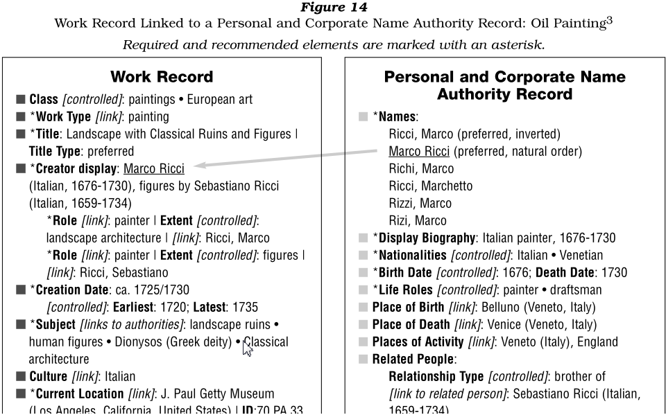
2.1.2 CCO Example: Hierarchical Link Between 2 Artworks
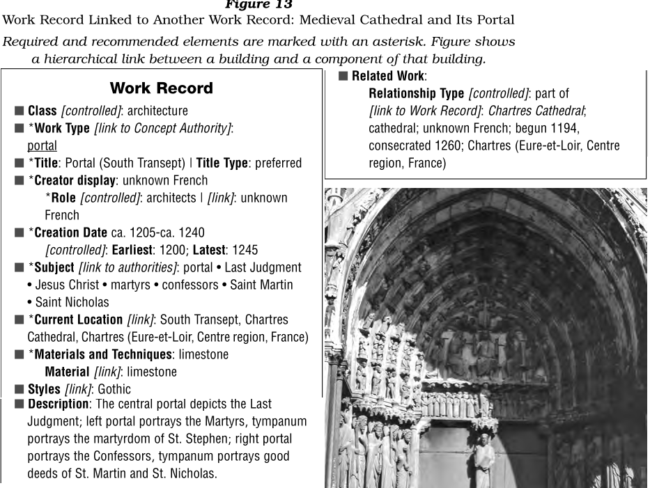
2.1.3 CCO Example: Creator Extent
How to describe one aspect of the data
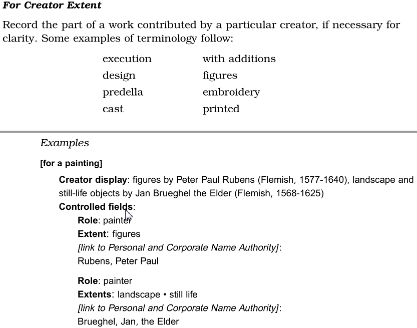
2.1.4 SPECTRUM
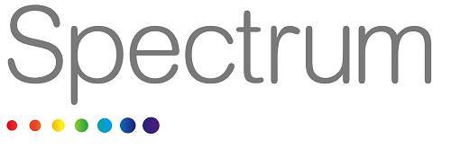 UK Museum Collections Management Standard
- Defines procedures for museums to follow, and the attendant data
- Covers 21 procedures: Pre-entry, Object entry, Loans in, Acquisition, Inventory control, Location and movement control, Transport, Cataloguing, Object condition checking and technical assessment, Conservation and collections care, Risk management, Insurance and indemnity management, Valuation control, Audit, Rights management, Use of collections, Object exit, Loans out, Loss and damage, Deaccession and disposal, Retrospective documentation
- Addresses accreditation
2.1.5 SPECTRUM Example: Object Entry
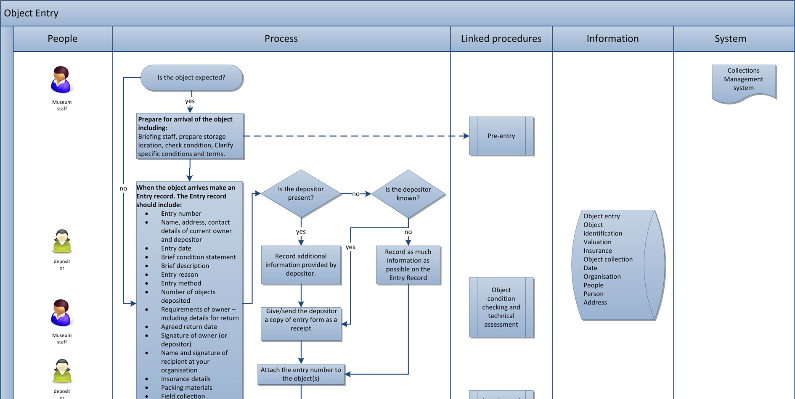
2.2 Archival Content Standards
- ISAD(G): archival materials
- ISAAR(CPF): agents (corporations, people, families)
- ISDF: functions (eg Secretary of some society)
- ISDIAH: archival holding institutions
Image by D.Pitti, 2015

2.3 Library Content Standards
- AACR2 (Anglo-American Cataloging Rules 2)
- International Standard Bibliographic Description (ISBD)
- Resource Description and Access (RDA)
Extremely detailed and comprehensive (see RDA later). But sometimes pay more attention where to put the commas than to:
- Data sharing
- Global availability of resources
- Sharing the cataloging burden
2.3.1 FRBR, FRSAD, FRAD
Functional Requirements for Bibliographic Records (FRBR), Subject Authority Data (FRSAD), Authority Data (FRAD) (J.Mitchell, M.Zeng, M.Zumer, 2011)
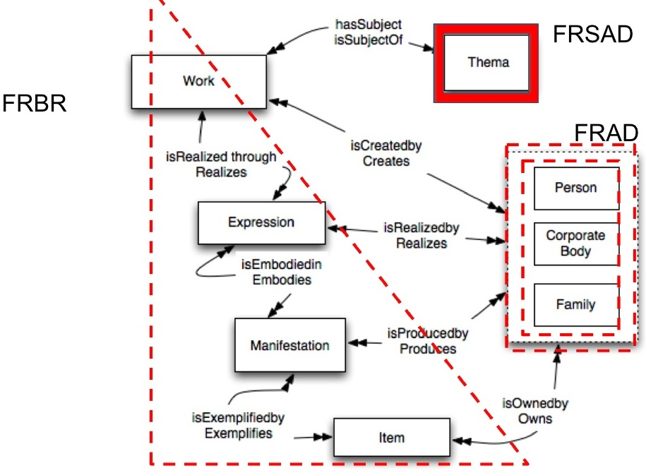
2.3.2 FRBR
Starts from user tasks (find, identify, select, obtain, explore). Introduces the important 4-level WEMI model (relates to Uniform Titles):
- Work: original or derived intellectual work (eg Don Quixote)
- Expression: translation or edition (eg Don Quixote translation to English)
- Manifestation: publisher's work (eg with illustrations, foreword by, compilation…). ISBNs are here
- Item: physical copy: libraries track loan/availability; famous copies (eg Lincoln's Bible); manuscripts are singleton items
2.3.3 FRSAD
Anything can be subject (thema), referred to by various names/titles (nomen)
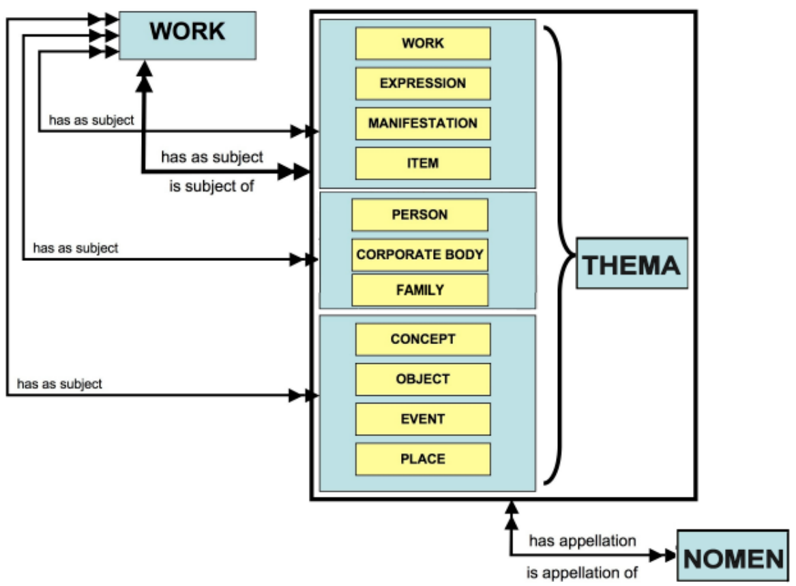
2.3.4 FRBR-LRM
FRBR-Library Reference Model (P.Riva, P.Le Bœuf, M.Žumer, Draft for World-Wide Review 2016-02). Merges the previous standards
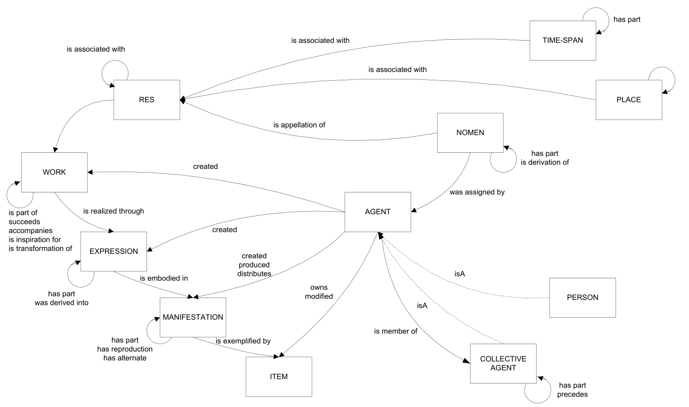
3 GLAM Metadata Schemas
How many of the standards listed in Seeing Standards: A Visualization of the Metadata Universe apply to your work? (by Jenn Riley, Associate Dean for Digital Initiatives at McGill University Library)

3.1 Seeing Standards (2)

3.2 XML Schemas
Do you deal with XML? I bet you do
- XML Schema (XSD): most widely used, but most unwieldy
- RelaxNG (RNG): new generation schema language
- RNG Compact (RNC): non-XML notation, most readable. Eg EAD3 is mastered in RNC, then RNG and XSD produced
- Schematron: express rules in XPath that can't be captured in XSD/RNG/RNC (eg cross-field validation)
Tools:
- https://github.com/EHRI/jing-trang/tree/EHRI-176: patch the jing RNG validator to emit errors like Schematron (SVRL with XPath error location)
- https://github.com/VladimirAlexiev/rnc: RNC tools and CH schemas in RNC. Emacs with code highlighting and syntax checking (flycheck)
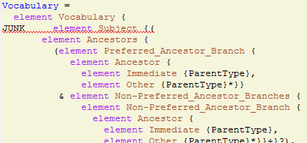
3.3 Museum Metadata: CDWA
Categories for the Description of Works of Art (CDWA): realization of CCO, 532 "categories" (data elements).
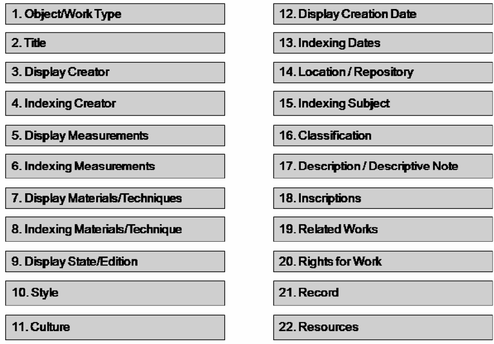
3.3.1 CDWA Lite
XML schema implementing part of CDWA. Moderate complexity, about 300 elements. Display vs Indexing (structured) elements, eg for Dimension.
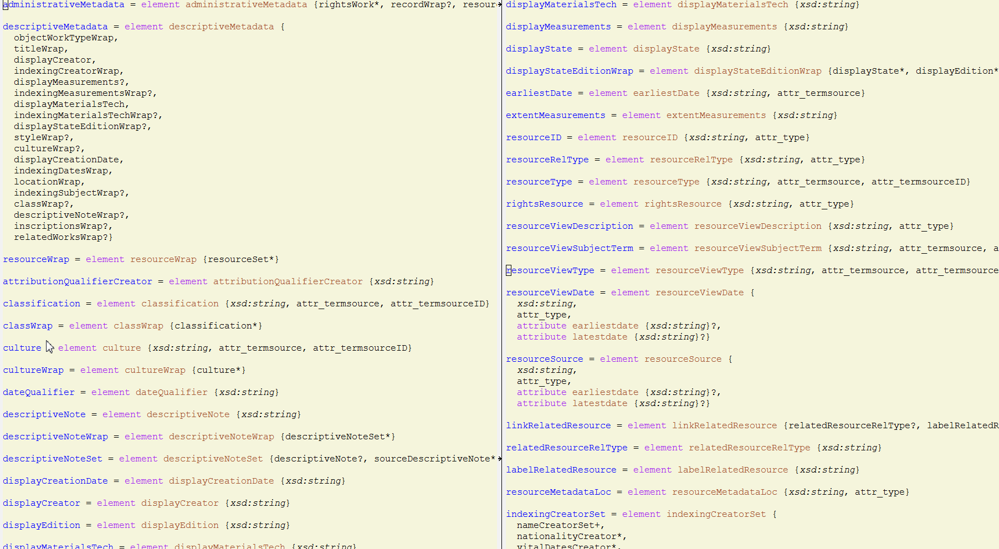
3.3.2 CONA Schema
Cultural Objects Name Authority (CONA): Getty museum data aggregation. Moderate complexity, about 280 elements:
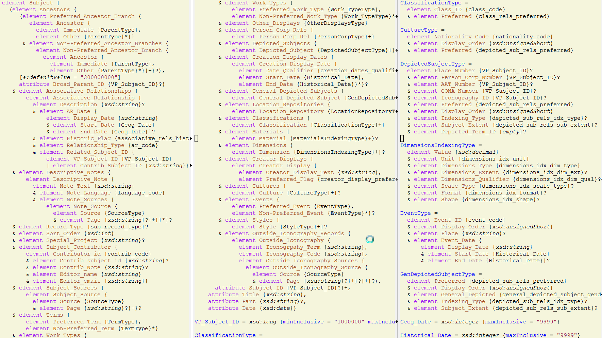
3.3.3 SPECTRUM XML
SPECTRUM Schema 4.0b has 10 entities and 592 fields, of which 490 are Object (artwork) fields. I am not aware of any systems producing this.
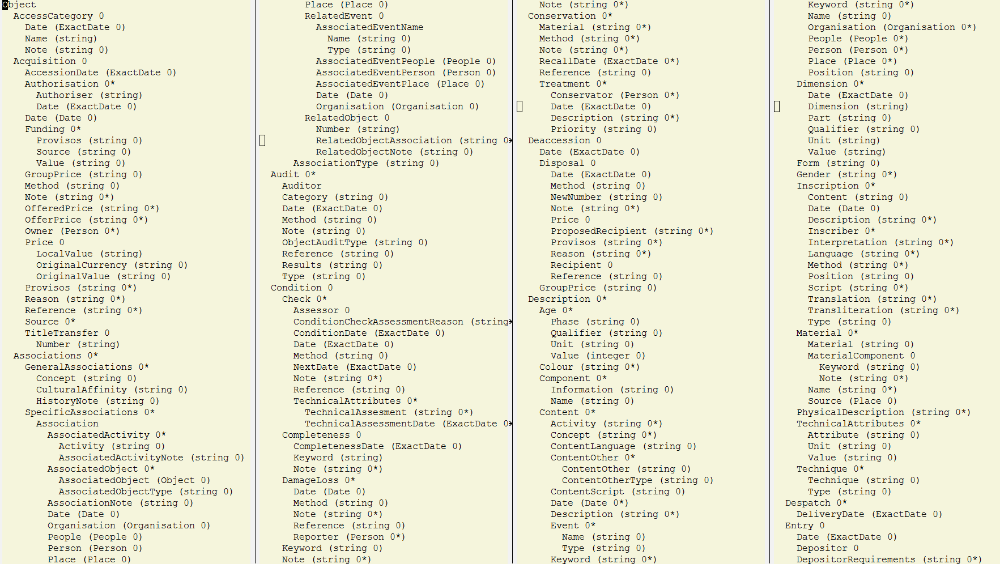
3.3.4 LIDO
Lightweight Information Describing Objects (LIDO). Evolved from CDWA, museumdat, with inspiration from CIDOC CRM. (Images by R.Stein and A.Vitzthum, ATHENA workshop, 2010)
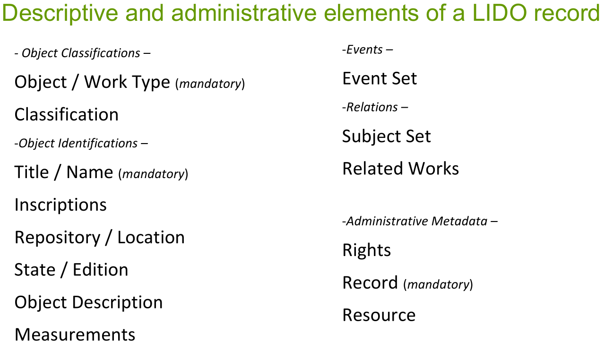
3.3.5 LIDO Schema
- Complex schema, eg when referring to a related object, you can provide almost as much detail as for the main object. Could leverage opportunities for linking more.
- Display vs Indexing (structured) elements: inherited from CDWA
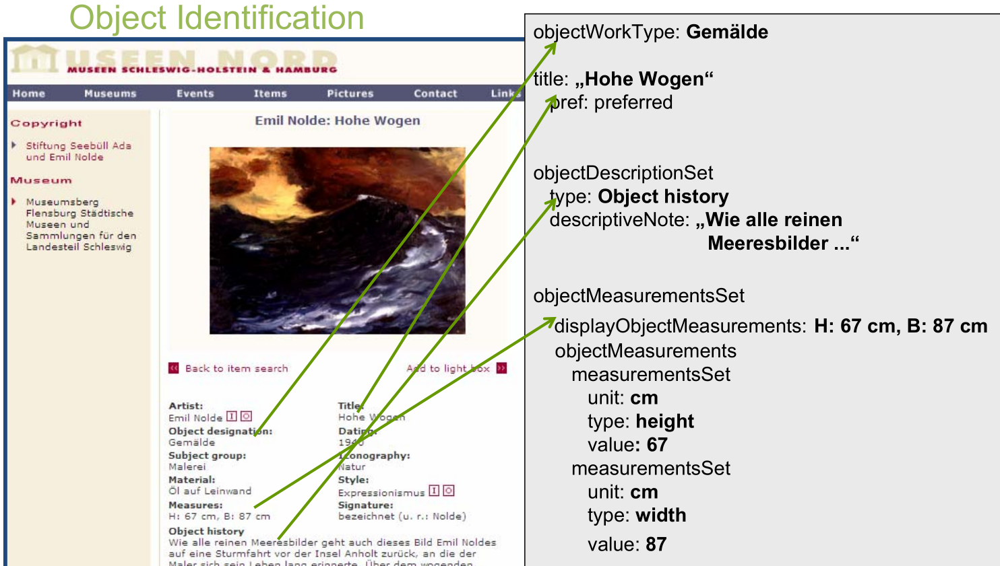
3.4 Archive Metadata
- EAD: Encoded Archival Description. Describes archival materials (documentary units)
- EAC/CPF: Encoded Archival Context: Corporations, Persons, Families
- EAG: Encoded Archival Guide. Describes institutions
3.4.1 Archive Metadata Problems
Pay a lot of attention to presentation, not enough to linking (difficult to "semanticize"). Emphasis on documents, not historic agents and events
- EAG: So-called "controlled access points" are text, and typically not controlled at all
- EAC: Many institutions don't consider EAC very valuable, and instead put person info in EAD's bioghist element (example below from EADiva)
- EAC: Related persons are names ("strings"), not links ("things")
- EAC: Events include lots of info but only Date is separate field (person names could be tagged but often are not)
- EAC: Family tree modeled as Outline, that's also used for other purposes (just presentation)
<bioghist> <head>Chronological Events</head> <chronlist> <chronitem> <date normal="19781028">October 28, 1978</date> <event> <persname normal="Wossname, Samuel">Sam Wossname</persname> succeeds <persname normal="Othername, John">John Othername</persname> as department head. </event> </chronitem> <chronitem> <date normal="19790315">March 15, 1979</date> <event>Departmental reorganization.</event> </chronitem> </chronlist> </bioghist>
3.5 Library Metadata: MARC
MARC is 50 years old, unreadable, and doesn't accommodate new FRBR principles. MARC-XML is not much better
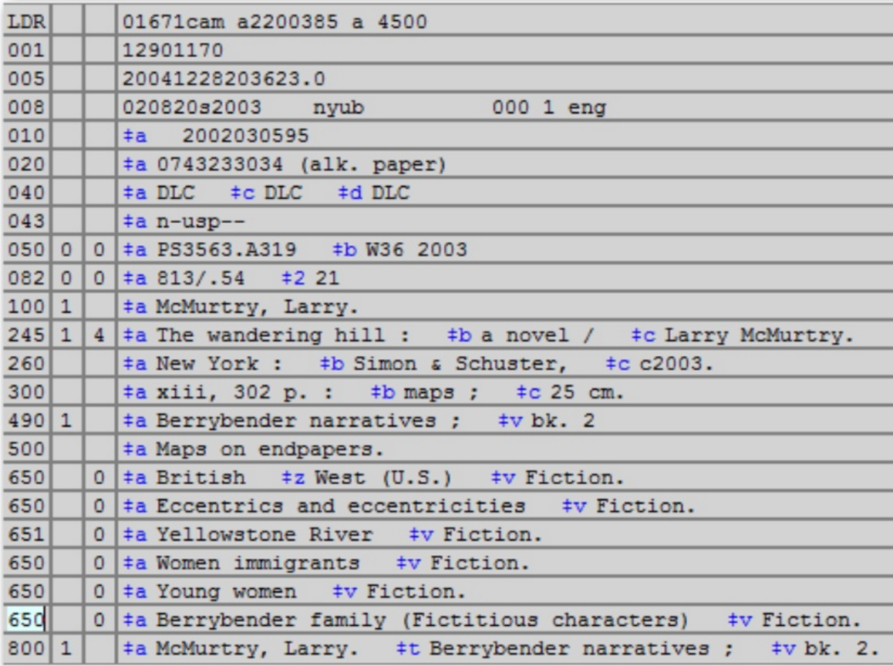
3.5.1 MARC Must Die
A whole emotional subculture, based on a slogan by Roy Fielding, 2002.
- marc-must-die.info: "MARC is dead" (is it really?)
- FutureLib: in-depth discussion wiki
- Facebook group
Presentation by Sally Chambers, ELAG 2011
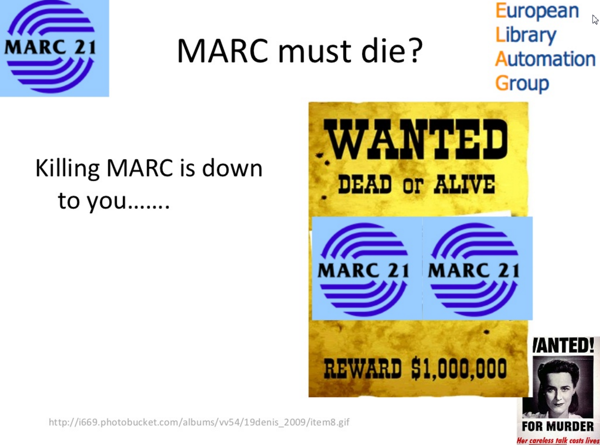
4 GLAM Ontologies
Why do they call conversion to RDF "lifting" and back to some other format "lowering"?
- RDF is a simple abstracted data model
- Doesn't have nesting biases like XML: whether a sub-element is nested or referenced by ID. Has less syntactic idiosyncrasies
- (RDF/XML is awful, but there is Turtle for readability, or JSONLD for programmer convenience)
- The model is self-describing in a distributed way: if a class/property is looked up, should return description and info
4.1 Europeana Data Model
Model used by the Europeana aggregator (53M objects), and adopted by Digital Public Library of America (DPLA) Based on:
- OAI ORE (Open Archives Initiative Object Reuse & Exchange): organizing object metadata and digital representations (WebResources)
- Dublin Core: descriptive metadata
- SKOS (Simple Knowledge Organization System): conceptual objects (concepts, agents, etc)
- CIDOC-CRM inspired: events, some relations between objects

4.1.1 EDM Semantic Graph

4.1.2 EDM Issues/Considerations
- Criticized that it's not expressive enough. Eg can't capture the specific contribution of an artist to artwork
- Complication: splits info about an object:
- EDM External (form provider): edm:ProvidedCHO and ore:Aggregation
- EDM Internal (at Europeana): edm:ProvidedCHO and 2 <ore:Aggregation, ore:Proxy> pairs
- Many providers use the minimal features and make mistakes; Europeana didn't do a lot of validation
- Old objects retro-converted from ESE are poor (only text), though some enrichments added by Europeana
- Europeana Data Quality Committee formed, to push this strategic point (2015-2020)
Evolving specification (since 2009)
- Currently considering actual implementation of Events
- Extensions for manuscripts, music, fashion, etc
4.2 CIDOC CRM
CIDOC CRM: comprehensive reference model used for history, historic events, archaeology, museum data, etc by CIDOC (ICOM documentation committee). Standardized as ISO 21127:2014, still evolving. About 85 classes, fundamental branches: Persistent (endurant) vs Temporal (perdurant), Physical vs Conceptual

4.2.1 CIDOC CRM Properties
Classes represent abstract things (eg crm:E24_Physical_Man-Made_Thing), specific things (eg Paintings, Coins) are accommodated with crm:P2_has_type. 135 props (plus their inverses); prop hierarchy (see "- - -" at bottom):
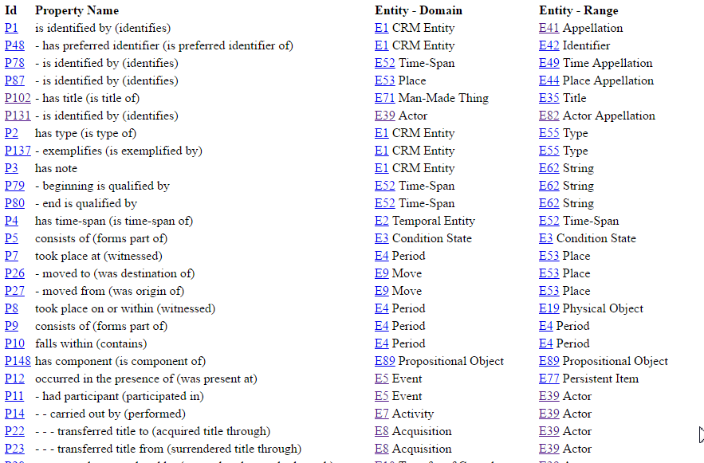
4.2.2 CIDOC Graphical Examples
- Video Tutorial (or HTML version including Kindle)
- Graphical Representation (or continuous HTML version including Kindle): essential to understand how to apply CRM in various situations
- Typical modeling construct short-cut (crm:P43_has_dimension) vs long-path (eg crm:P39i_was_measured_by/crm:P40_observed_dimension), which allows more details

4.3 Web Annotation (Open Annotation, OA)
W3C TR: mark, annotate, relate any web resources, eg: Webpage and bookmark, Image and region over it, Document and translation, Paragraph and commentary. Diagram of Complete Example from spec (using my rdfpuml)

4.4 International Image Interop Framework (IIIF)
Standard API for DeepZoom (hi-res) images. Supported by many servers and viewers. http://iiif.io

4.4.1 IIIF Presentation API
Based on OA and SharedCanvas. Strong attention to JSONLD representation (convenient for developers). Allows to assemble manuscripts from pieces, present folios, etc etc. See Rob Sanderson presentations, eg IIIF and JSONLD:
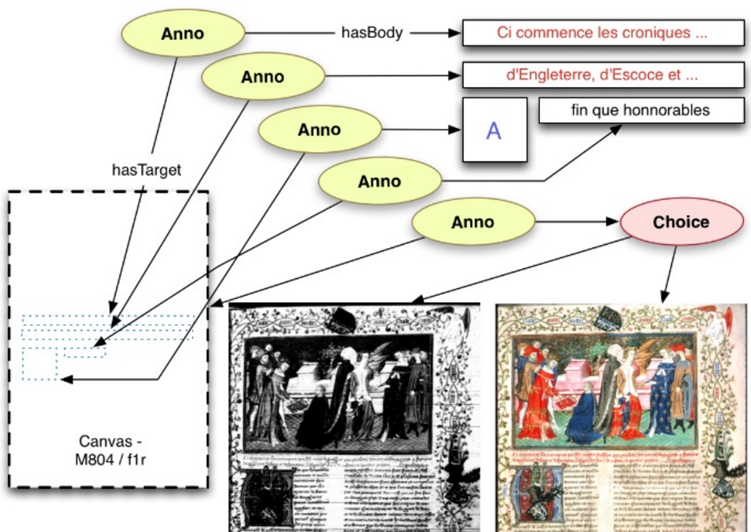
4.5 Library Ontologies
War of the Bibliographic Ontologies?
- BIBO: used for a long time, pragmaic
- FRBRer: pragmatic realization of FRBR, but little uptake (not rich enough?)
- FRBRoo: based on CIDOC CRM, perhaps too complex
- Fabio, Cito, Doco and friends: modern, includes new features (eg citation intent)
- BibFrame: sponsored by LoC, but soundly criticized for modeling mistakes
- RDAregistry.info: basic FRBR classes, numerous properties for all kinds of things. Used for 100M records at TEL
- SchemaBibEx (http://bib.schema.org): steps on a clean model sponsored by the big 4 search engines (Google, MS Bing, Yahoo, Yandex.ru). Developed by OCLC. May end up being used for 300M records at WorldCat.
4.5.1 RDAregistry
Resource Description and Access (RDA). Registry info is well organized
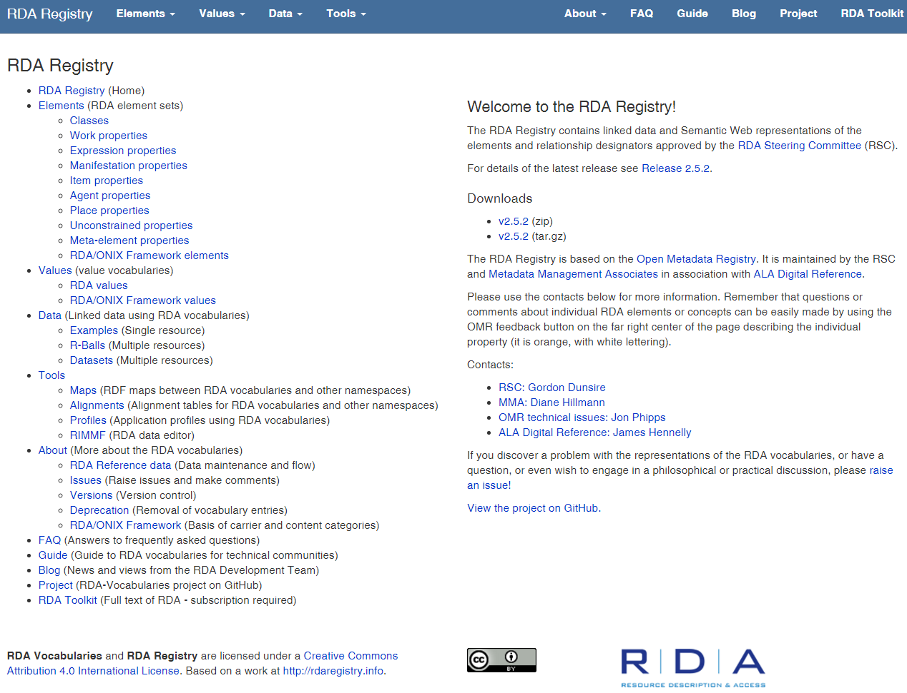
4.5.2 RDAregistry Properties
Many props (306 for Work alone), for specific purposes (eg "apellee" for court decisions, "granting institution" for academic theses). Numeric prop names, but lexical (natural language) also supported. Serves many semantic formats.
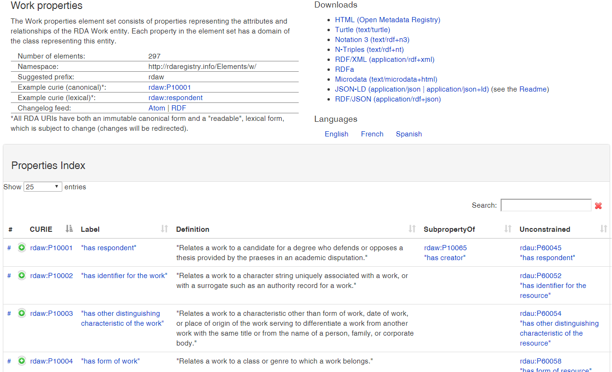
4.5.3 A Taste of FRBRoo
EDM–FRBRoo Application Profile Task Force: asked what to add to EDM to better fit FRBRoo.
- TF members developed a number of examples, eg on publications of "Don Quixote" (T.Aalberg, V.Alexiev, J.Walkowska).
EDM variant:
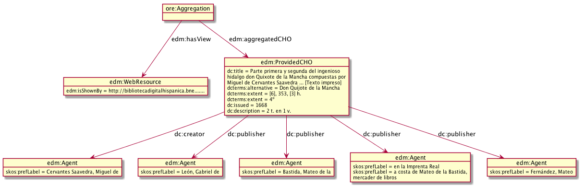
4.5.3.1 A Taste of FRBRoo
Simpler FRBRoo variant:
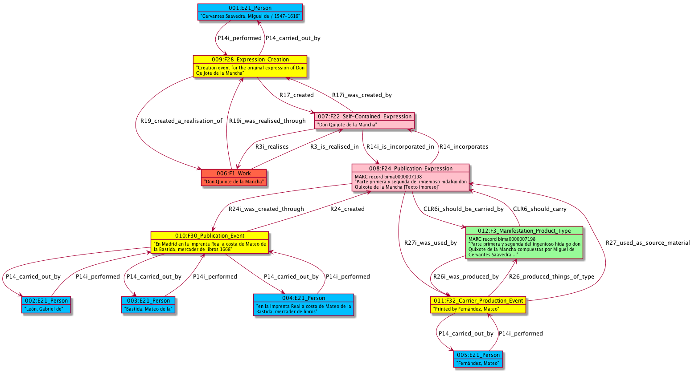
4.5.3.2 A Taste of FRBRoo
More complex FRBRoo variant:
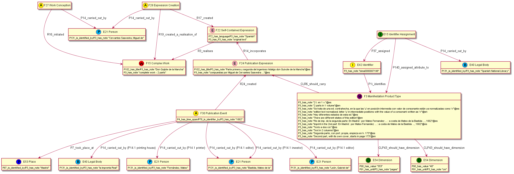
4.5.4 FRBR-Inspired
- "FRBR, Before and After" by K.Coyle (ALA 2016) is an in-depth look at FRBR-inspired models/realizations.
- Chapter 10 describes the following ontologies: FRBRer, FRBRcore, FaBiO, <indecs>, BIBFRAME, RDA in RDF, webFRBRer, FRBRoo
- "Mistakes have been made", K.Coyle, SWIB 2015
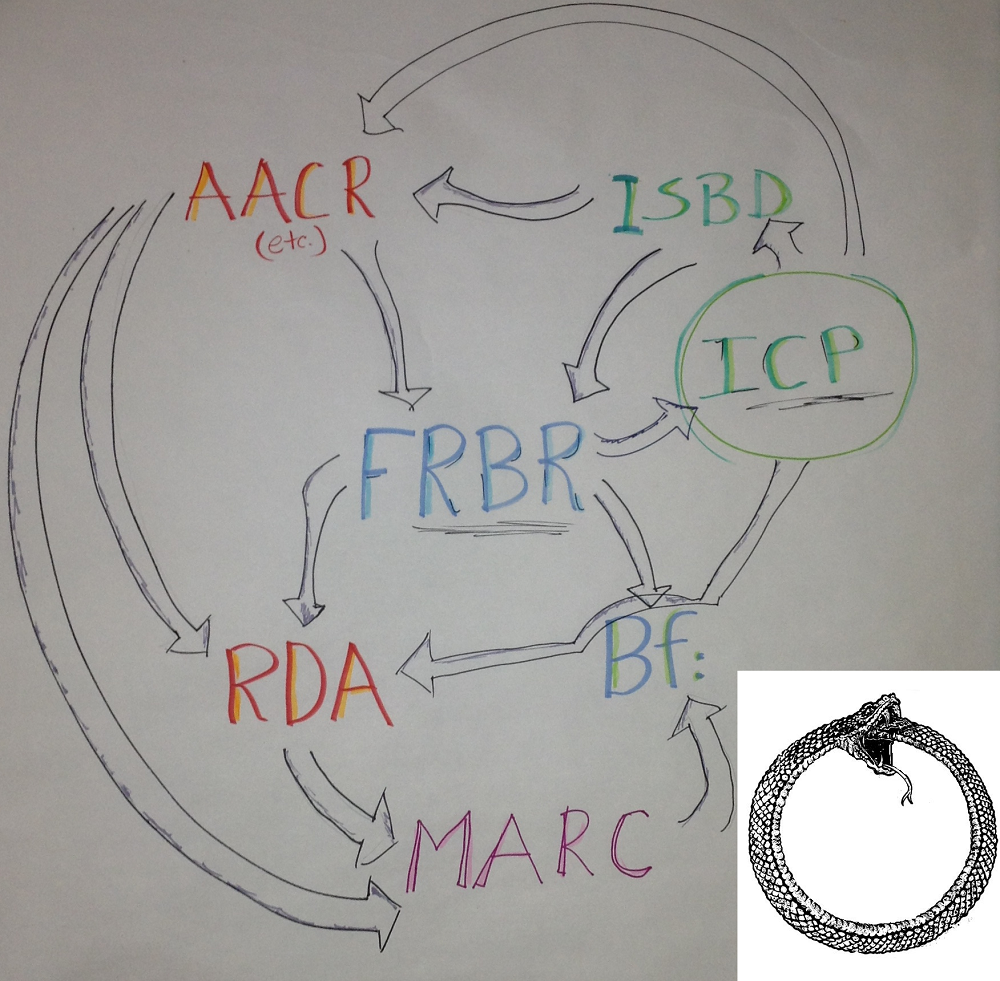
4.5.5 British Library Data Model
Pragmatic data model that reuses several ontologies, and adds own props
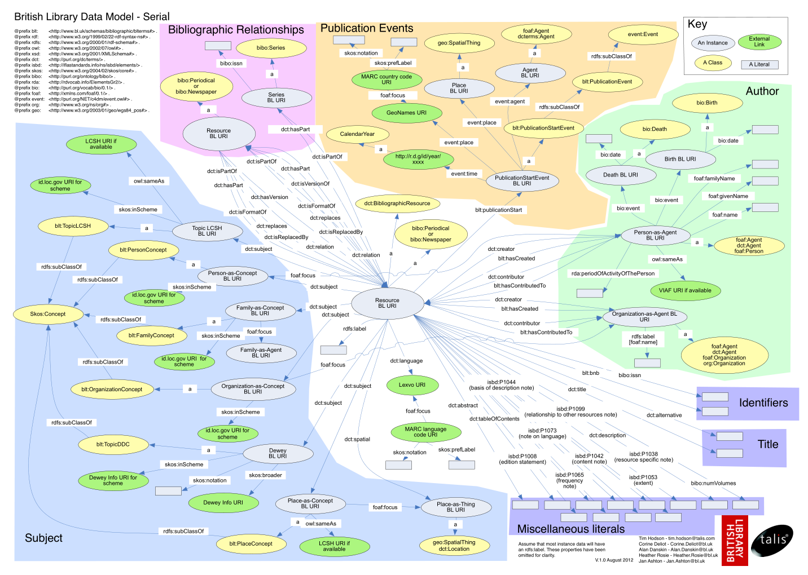
4.5.6 First Library That Runs on RDF
Oslo Public Library (http://data.deichman.no, since 2014) uses Koha open source software, RDF in the core, and marc2rdf/rdf2marc conversions. Pragmatic data model that reuses several ontologies, and adds own props. Enables a number of agile apps, eg search related books on Kiosk
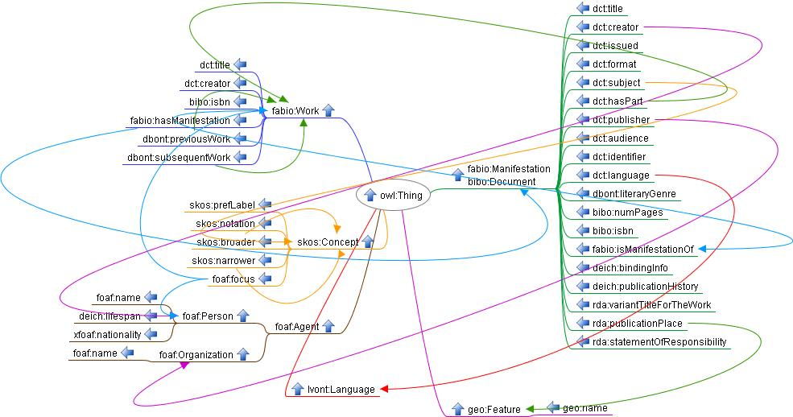
4.5.6.1 Oslo Public Library Data
d_res:tnr_749919 rdf:type bibo:Document , fabio:Manifestation ; dc:title "About time" ; d:titleURLized "about_time" ; fabio:hasSubtitle "Einstein's unfinished revolution" ; ctag:tagged d_keyword:imaginary , d_keyword:dilation , d_keyword:time , d_keyword:tidsreiser , d_keyword:tidsdilatasjon ; foaf:depiction <http://covers.openlibrary.org/b/id/96714-M.jpg> , <http://covers.openlibrary.org/b/id/96715-M.jpg> , <http://www.bokkilden.no/SamboWeb/servlet/VisBildeServlet?produktId=81081> ; owl:sameAs <http://purl.org/NET/book/isbn/0140174613#book> , <http://www4.wiwiss.fu-berlin.de/bookmashup/books/0140174613> ; dc:language lexvo:eng ; d:bibliofilID "931138" ; dc:format <http://data.deichman.no/format/Book> ; d:location_signature "Dav" ; dc:publisher d_org:penguin ; bibo:numPages "316" ; d:physicalDescription "fig." ; d:bibsubject d_subject:einstein_albert , d_subject:tid_metafysikk ; fabio:isManifestationOf d_work:x24918900_about_time ; d:signatureNote "07x0619gq" ; d:bindingInfo <http://data.deichman.no/bindingInfo/h> ; d:bsID "0181541" ; dc:description "Bibliografi: s. 293-294"@no ; d:priceInfo "Nkr 170.00" ; foaf:isPrimaryTopicOf <http://www.goodreads.com/book/show/286461> , <http://www.librarything.com/work/23493> ; dc:identifier "749919" ; d:dewey "115" , "530.11" ; d:location_dewey "530.11" ; bibo:isbn "9780140174618" , "0140174613" ;
4.6 Archival Ontologies
3 attempts to represent EAD as RDF, but IMHO neither is very good.
- Eg "The Semantic Mapping of Archival Metadata to the CIDOC CRM Ontology" (Journal of Archival Organization, 9:174–207, 2011) proposes to represent the EAD levels hierarchy (from Fonds down to Items) as five parallel CRM hierarchies
Records in Context (RiC): new upcoming semantic standard by ICA
- Addresses the scope of EAD, EAC, EAG in one framework. Inspired by national standards, FRBR (FRBR-LRM), CIDOC CRM
- Progress report (2015), Mlist for comments
- Conceptual Model 1.0 (Sep 2016): Document key components of archival description, properties of each, relations between them
- Ontology: after finalizing the Conceptual Model, Expressed in OWL, will include semantic mapping to similar concepts developed by related communities
4.6.1 RiC Sample Network
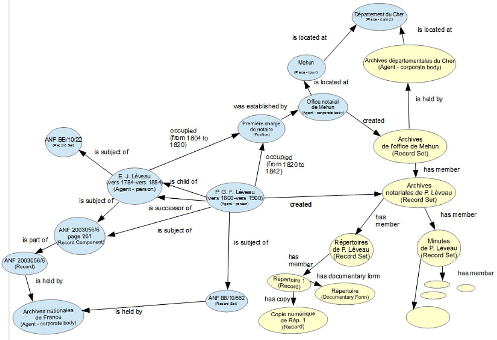
5 GLAM LOD Datasets (LODLAM)
- Some established thesauri and gazetteers as LOD, some are interconnected: DBPedia; Wikidata, VIAF, FAST, ULAN; GeoNames, Pleiades, TGN; LCSH, AAT, IconClass, Joconde, SVCN, Wordnet, etc.
- Not shown: large collection LODs like: Europeana (EDM), British Museum (CIDOC CRM), YCBA (CIDOC CRM), Rijksmuseum (EDM)
- (Diagram based on work by M.Hildebrand)
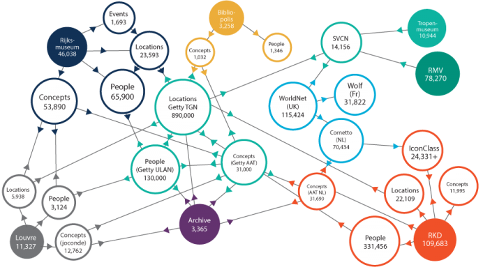
5.1 Wikidata
Tons of info on everything, including GLAMs, artists, artworks, etc. Eg Frans Hals on Reasonator
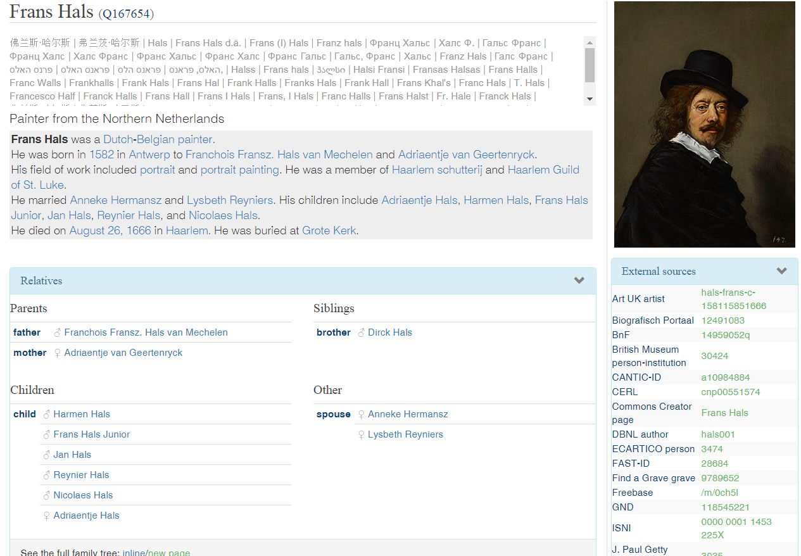
5.1.1 Wikidata Genealogy
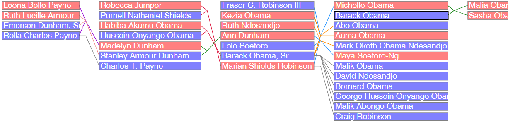
5.1.2 Sum of All Paintings
Wikidata Project Sum of All Paintings. Data used for:
- Works by painter across collections (catalogue raisonné). Eg Frans Hals

5.1.3 Crotos
Excellent image search. Shows links to WD, Wikimedia Commons, original website. Eg Frans Hals on Crotos

5.1.4 You can help too!
Hunting for missing inventory numbers (9.9k of 140k). Important because <collection, inventory number> is used to identify the painting. Eg US (1k), Getty Museum (2)
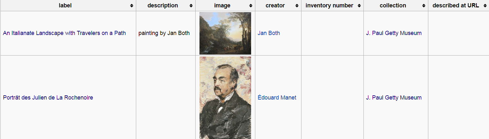
5.1.5 Let's fix the second one
Find it on Getty's site, add the info like this:
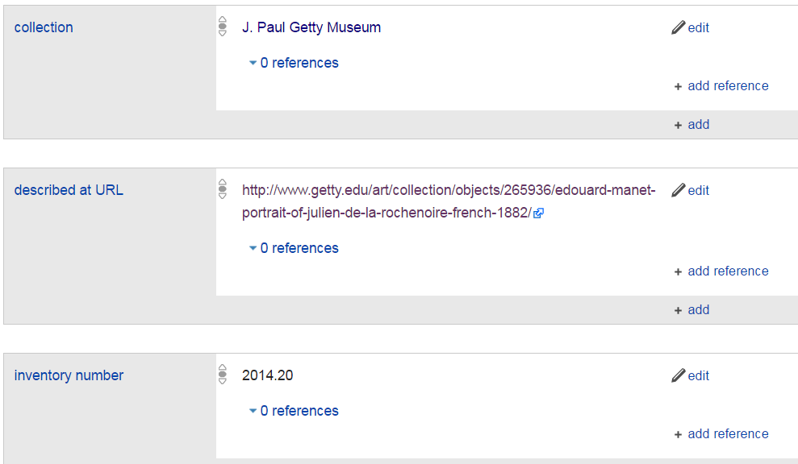
5.1.6 Histropedia
Timelines of everyting. Eg paintings by Leonardo

5.2 VIAF
Virtual International Authority File: 20 national libraries, 10 other contributors including Getty ULAN and Wikidata. Eg coreferencing cluster of Spinoza:

5.2.1 VIAF vs Wikidata (2015)

5.3 Global Authority Control
- 201307 Authority Addicts: The New Frontier of Authority Control on Wikidata, Wikimania 2013
- 201501 Wikidata Project Authority Control (initiated by Ontotext)
- 201503 Name Data Sources for Semantic Enrichment study for Europeana of datasets including Person/Organization names. Conclusions:
- The best datasets to use for name enrichment are VIAF and Wikidata
- There are few name forms in common between the "library-tradition" datasets (dominated by VIAF) and the "LOD-tradition datasets" (dominated by Wikidata)
- VIAF has more name variations and permutations, Wikidata has more multilingual names (translations)
- VIAF is much bigger: 35M persons/orgs. Wikidata has 2.7M persons and maybe 1M orgs
- Only 0.5M of Wikidata persons/orgs are coreferenced to VIAF, with maybe another 0.5M coreferenced to other datasets, either VIAF-constituent (eg GND) or non-constituent (eg RKDartists)
- A lot can be gained by leveraging coreferencing across VIAF and Wikidata
- Wikidata has great tools for crowd-sourced coreferencing
5.3.1 Names of Lucas Cranach
Analyzed records of Lucas Cranach in 7 LOD datasets (Wikidata: Freebase, DBpedia, Yago; VIAF: ISNI, ULAN).

5.3.2 Wikidata Coreferencing can Enlarge VIAF

5.3.3 Mix-n-Match
A global Authority on everything: librarian's dream come true! Mix-n-Match is a collaborative tool to create coreferences. 234 authorities, including Getty AAT, TGN, ULAN; RKD artists, works; LoC Authorities; VIAF (not in M-n-M but on WD); BM persons; BBC YourPaintings; Artsy, etc etc

5.3.3.1 You can help with Authorities too!
Eg checking matches to Getty AAT. Single sign-on, a click per item. Easy!
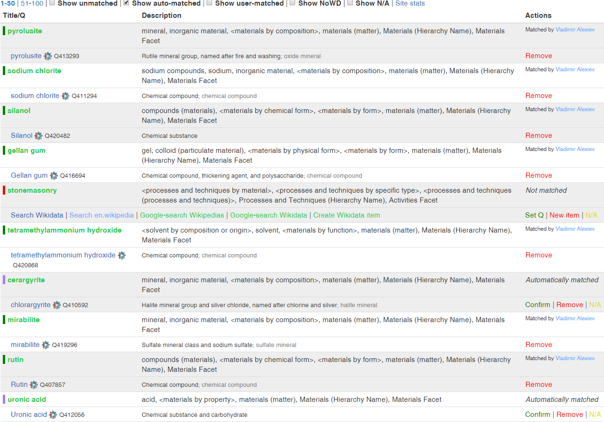
6 LODLAM Projects
GLAM and DH projects present a bewildering variety, eg
- Publishing Vocabularies/Thesauri as LOD
- Publishing Museum collections and National Bibliographies as LOD
- Enrichment of GLAM metadata with relevant thesauri, semantic and faceted search
- Study of artistic influence over time and space
- Literary traditions, parallel editions
- Poetic repertories
- Studying manuscripts, stematology (manuscript derivation)
- Historiography
- Studying charters, prosopography ("micro biographies"). "Prosopography is Greek for Facebook", SNAP:DRGN project, 2015
Research functions and sometimes integrated into Virtual Research Environments
6.1 Mellon "Space" Projects
The Andrew Mellon Foundation funds many projects in CH and DH, and a few software projects, including:
- CollectionSpace: museum collection management
- ArchiveSpace: archive management
- ResearchSpace: semantic integration based on CIDOC CRM, search, data & image annotation, data basket, etc
- ConservationSpace: line of business application for conservation specialists
6.2 ResearchSpace
Executed by the British Museum. Ontotext developed the first prototype (2010-2013). Semantic Search

6.2.1 ResearchSpace Search
Powerful and precise search: Drawings by Rembrandt that are about Mammals
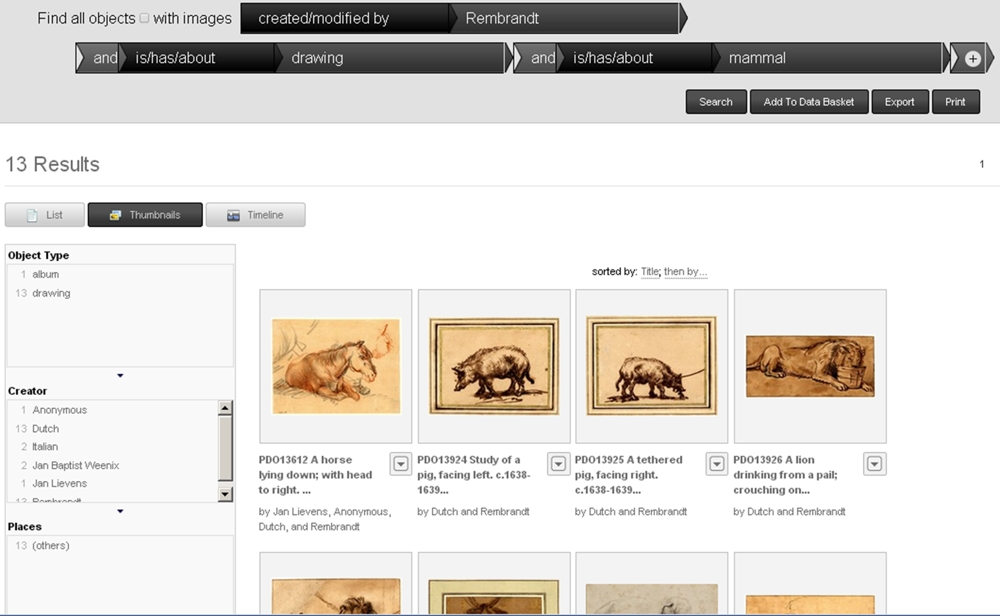
6.2.2 ResearchSpace Search: Fundamental Relations
First implementation experience of the CIDOC CRM Fundamental Relations approach
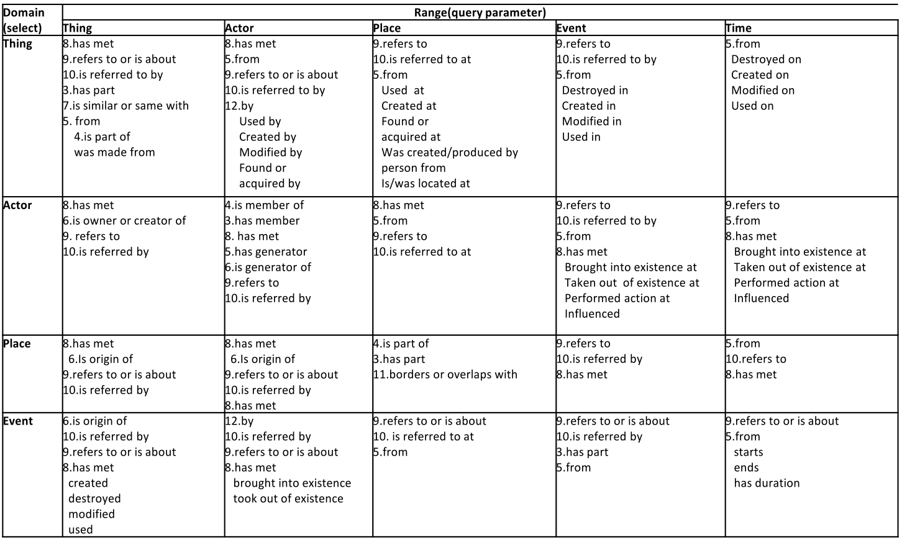
6.2.3 ResearchSpace Search: One FR (Thing from Place)
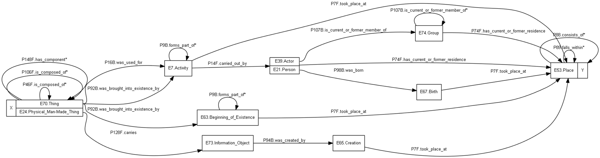
6.2.4 ResearchSpace Search: Implementation
120 GraphDB rules, weaved using Literate Programming approach. Inference dependencies between props (text=input, gray=intermediate, white=output)

6.2.5 ResearchSpace Search: New Implementation
(Not Ontotext work). Watch the video (D.Oldman)
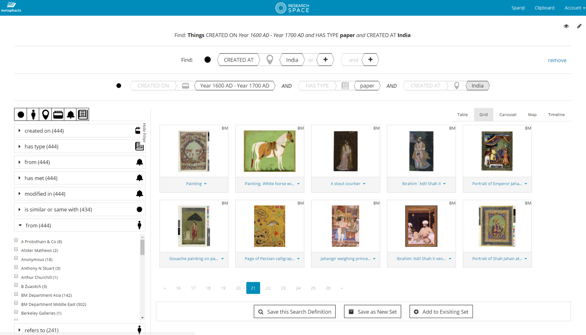
6.2.6 ResearchSpace Data Annotation
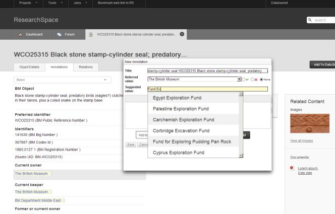
6.2.7 ResearchSpace Data Annotation Model
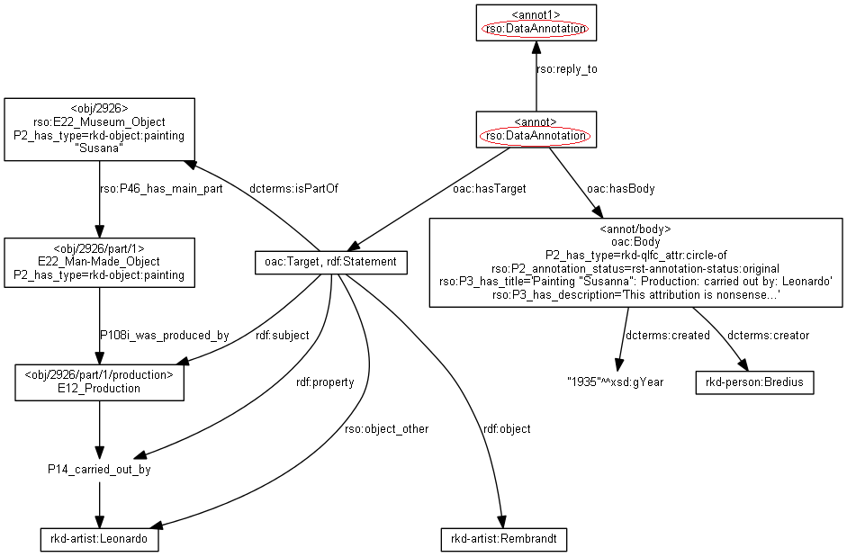
6.2.8 Image Annotation
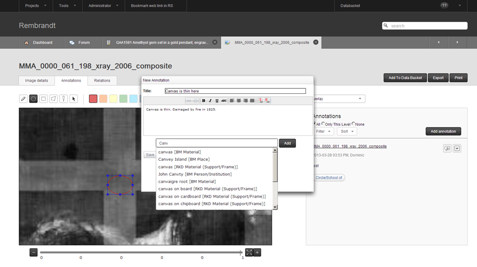
6.2.9 Image Annotation Model
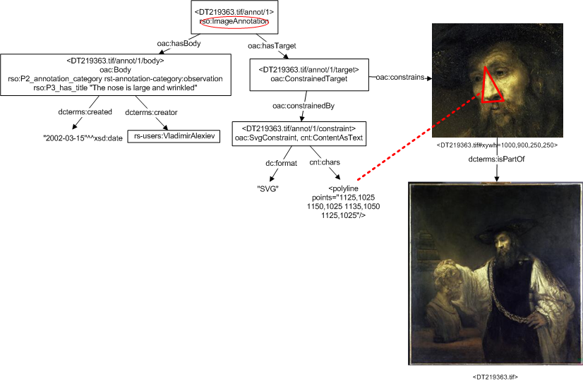
6.2.10 Image Annotation Architecture
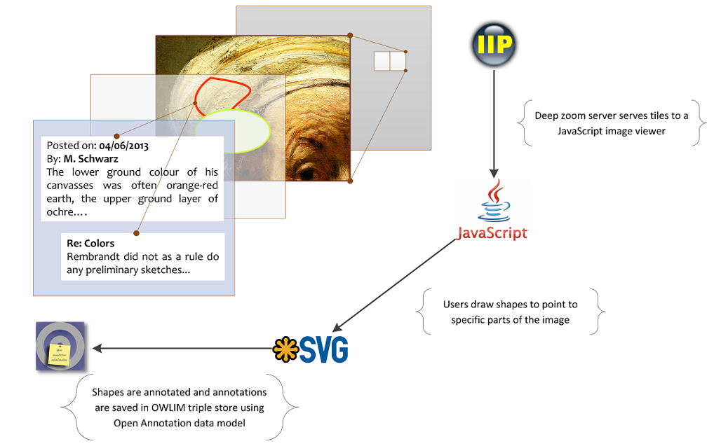
6.3 British Museum (BM) and YCBA LOD
- GraphDB runs the BM SPARQL endpoint. One of the biggest CH RDF collections (917M triples)
- As part of RS, developed mapping of BM data (2M objects) with BM, using CIDOC CRM
- This mapping was followed by the Yale Center for British Art (YCBA)
- Mapping Documentation: very comprehensive but is monolithic and has imprecisions. Includes the (in)famous diagram

6.4 ConservationSpace
Executed by a consortium led by US National Gallery of Art. Developed by Sirma ITT (Ontotext sibling). Based on Ontotext GraphDB (semantic metadata), Alfresco (document management), Smart Documents (Sirma product).

6.5 Europeana LOD and OAI PMH
Ontotext crated and hosted the Europeana SPARQL and OAI PMH services
.png)
6.5.1 Europeana Statistics
Eg chart of newspapers (several millions) by year: can't do this using the Europeana API, but is easy with SPARQL
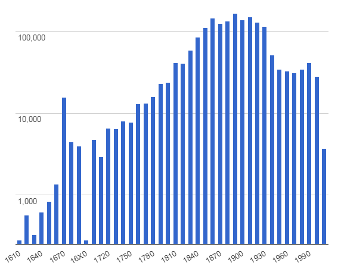
6.6 Europeana Food and Drink
Food & Drink content, semantically enriched (place and FD topic). EFD Semantic App: open data, SPARQL endpoint, open source (Github). Uses GraphDB and ElasticSearch enterprise connector

6.6.1 Tasty Bulgarian Recipes
Eg 150 with beer, including pancakes!

6.6.2 Wide Geographic Coverage
Objects from the Roman Empire to Antarctica (Scott's expedition to the South Pole), and everything in-between
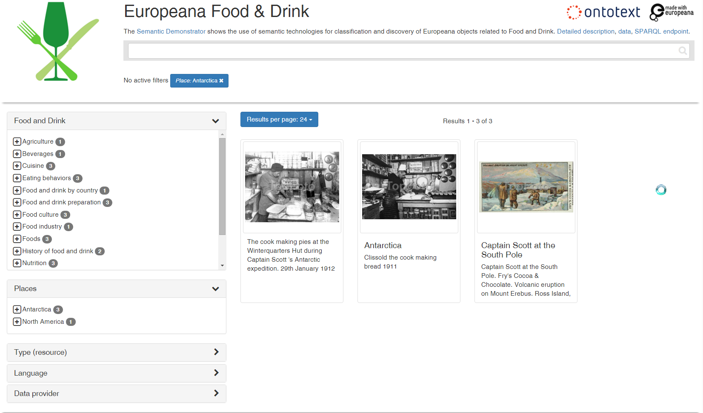
6.6.3 EFD Enrichment: FD Gazetteer
Use Wikipedia Categories to extract a FD Gazetteer.
- "Domain-specific modeling: Towards a Food and Drink Gazetteer", Tagarev, A.; Tolosi, L.; and Alexiev, V, LNCS 9398, p182-196, January 2016 (preprint)
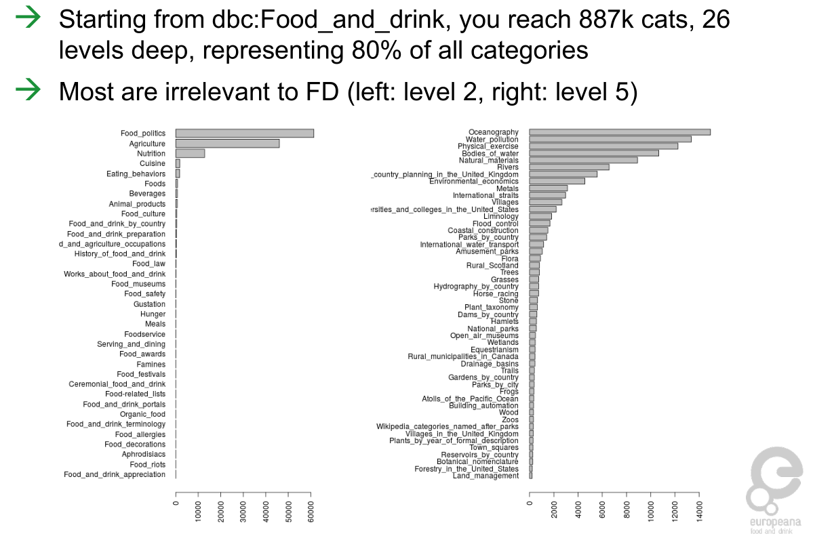
6.6.4 EFD Enrichment: Pruning FD Category Tree
- Using DBPedia in Europeana Food and Drink. Alexiev, V. DBpedia meeting, February 2016.
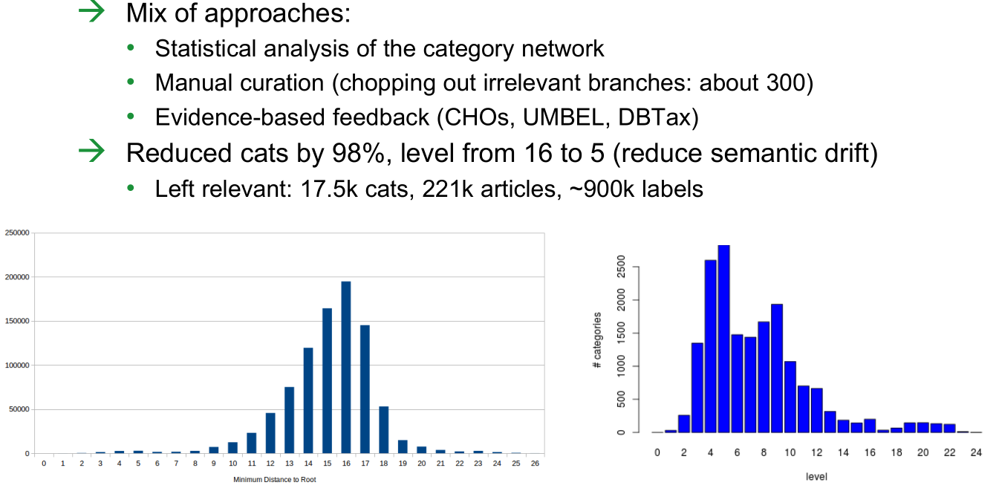
6.6.5 EFD Enrichment: French
Selected French as second enrichment language after English, considering category overlap (work by L.Tolosi, x-axis is cat level), available content, NLP capabilities
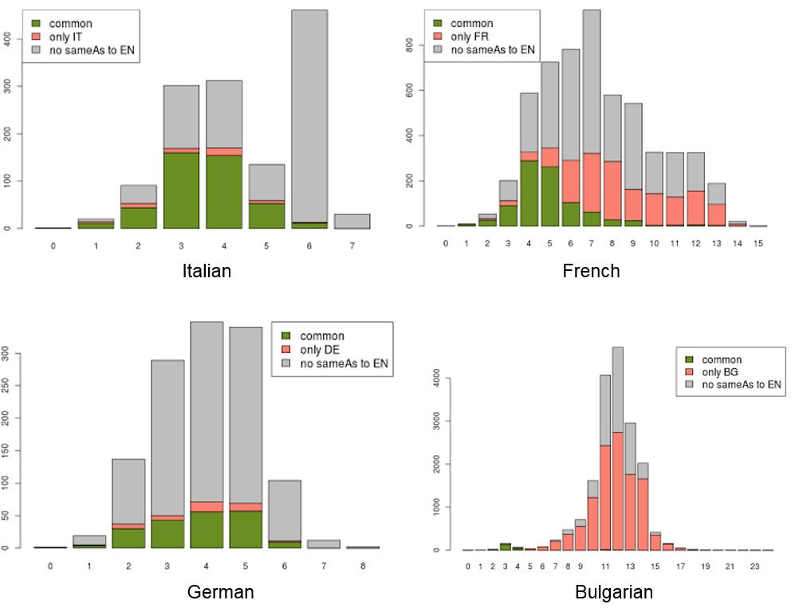
6.6.6 EFD Place Enrichment
We used standard Ontotext Concept Enrichment Service, which is a mix of DBpedia+Wikidata. But also had to add Geonames, to leverage the place hierarchy
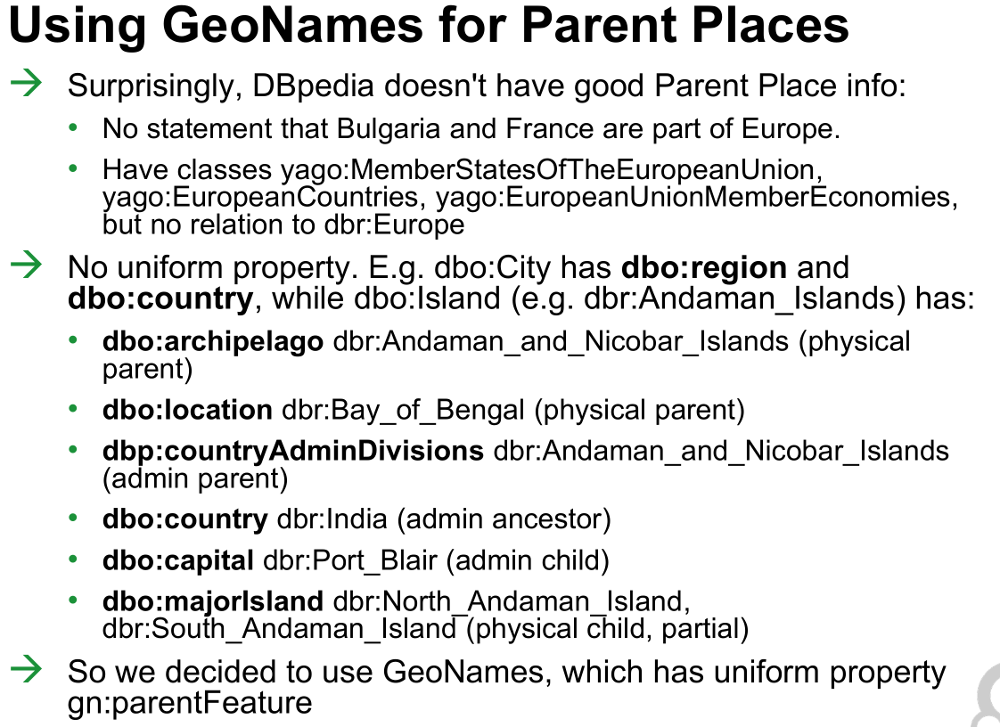
6.6.7 EFD Place Enrichment
Hierarchical semantic facet based on Geonames
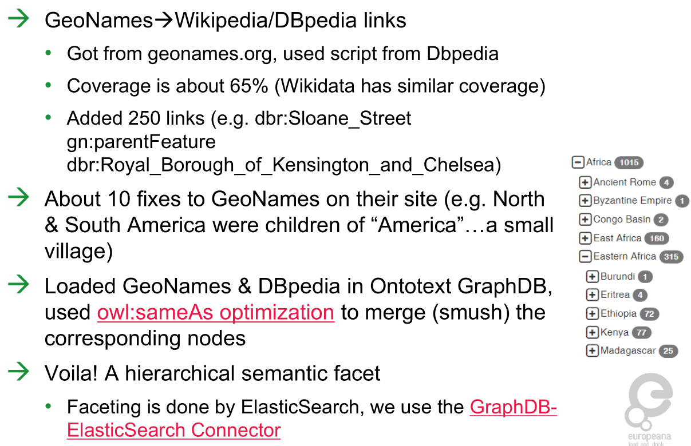
6.6.8 EFD Geographic Mapping: Clustering
Once we have places, it's relatively easy to map them. We used the Cluster Mapper library
6.6.9 EFD Geographic Mapping: Jittering
There are 9k objects marked "Bulgaria". We don't want all flags in the center of Bulgaria, so we jitter them up
6.6.10 GLAMs Working With Wikidata
Why should GLAMs bother about Wikidata? Because it gives an excellent way to connect and expose your collection data to a multilingual audience
- Europeana Wikimedia Taskforce report:
- Recommendation 1: For every Europeana project, considering the possible benefits of a Wikimedia component should be default behavior
- Recommendation 7: Make Wikidata a central element of Europeana's "portal to platform" strategy
- Recommendation 8: Europeana should continue to invest in technology that improves the interoperability between GLAMs and Wikimedia platforms
- GLAMs Working with Wikidata: easily add content about a colorful tradition "blessing of the baskets" ("swiecenie koszyczek" or just "Święconka" in Polish). With proper cats: when we merge them across languages (pl, en, de), we discover the content is about Food and Drink, Easter, and a Polish tradition
6.7 Getty Vocabulary Program LOD
GVP well-known and respected in GLAM. Dependencies: AAT-TGN-ULAN-CONA. Center of LODLAM cloud? GVP Training Materials (Diagram by J.Cobb, 2014)
6.7.1 GVP LOD Releases
AAT 2014-02, TGN 2014-08, ULAN 2015-03. Publicized in blog posts by J.Cuno, head of the Getty Trust

6.7.2 Ontotext Scope of Work
- Semantic/ontology development: http://vocab.getty.edu/ontology
- Contributed to ISO 25964 ontology (latest standard on thesauri). Provided implementation experience, suggestions and fixes
- Complete mapping specification
- Help implement R2RML scripts working off Getty's Oracle database, contribution to Perl implementation (RDB2RDF), R2RML extension (rrx:languageColumn)
- Work with a wide External Reviewers group (people from OCLC, Europeana, ISO 25964 working group, etc)
- GraphDB semantic repo, clustered for high-availability
- Semantic application development (customized Forest user interface) and tech consulting
- SPARQL 1.1 compliant endpoint: http://vocab.getty.edu/sparql
- Comprehensive documentation (100 pages): http://vocab.getty.edu/doc
- Sample queries (100), including charts, geographic queries, etc
- Per-entity export files, explicit/total data dumps. Many formats: RDF, Turtle, NTriples, JSON, JSON-LD
- Help desk / support on twitter and google group (see home page)
- Presentations, papers. On the composition of ISO 25964 hierarchical relations (BTG, BTP, BTI). Alexiev, V.; Lindenthal, J.; and Isaac, A. International Journal on Digital Libraries, August 2015, Springer.
6.7.3 Complete Representation of All GVP Info
See GVP LOD: Ontologies and Semantic Representation, V.Alexiev, CIDOC 2014. External Ontologies:
| Prefix | Ontology | Used for |
| bibo: | Bibliography Ontology | Sources |
| dc: | Dublin Core Elements | common |
| dct: | Dublin Core Terms | common |
| foaf: | Friend of a Friend ontology | Contributors |
| iso: | ISO 25946 (latest on thesauri) | iso:ThesaurusArray, BTG/BTP/BTI |
| owl: | Web Ontology Language | Basic RDF representation |
| prov: | Provenance Ontology | Revision history |
| rdf: | Resource Description Framework | Basic RDF representation |
| rdfs: | RDF Schema | Basic RDF representation |
| schema: | Schema.org | common, geo (TGN), bio (ULAN) |
| skos: | Simple Knowledge Organization System | Basis vocabulary representation |
| skosxl: | SKOS Extension for Labels | Rich labels |
| wgs: | W3C World Geodetic Survey geo | Geo (TGN) |
| xsd: | XML Schema Datatypes | Basic RDF representation |
6.7.4 GVP Semantic Representation (1)
6.7.5 GVP Semantic Representation (2)
6.7.6 Key Values (Flags) Are Important
Excel-driven Ontology Generation™. Key val can be mapped to Custom sub-class, Custom (sub-)prop, Ontology Value (eg <term/kind/Abbreviation>)

6.7.7 Associative Relations Are Valuable
More Excel-driven Ontology Generation™
- Relations come in owl:inverseOf pairs (or owl:SymmetricProperty self-inverse)

6.7.8 Involved Inference of Hierarchical Relations
6.7.9 Comprehensive Documentation
Getty Vocabularies Linked Open Data: Semantic Representation. Alexiev, V.; Cobb, J.; Garcia, G.; Harpring, P. Getty Research Institute, 3.2 edition, March 2015.
6.7.10 Sample Queries (100), Integrated UI
Some charts, eg "Year Joined UN" (TGN), "Pope Reign Durations" (ULAN)

6.7.11 GVP Vocabs Usage
Collected about 100 usages of the vocabs, many in Collection Management and Search. Many described in Getty Vocabs: Why LOD? Why Now?, J.Cobb, 2014. Eg
- AAT used in Cataloging Calculator: finds bibliographic and authority data: language codes, geographic area codes, publication country codes, AACR2 abbreviations, LC main entry, Cutter numbers, AAT concepts, etc
6.7.12 AAT in Europeana
- Europeana uses AAT to enrich type/subject/material fields
- PartagePlus matched Art Nuveau candidate concepts to AAT; enriched labels
6.8 J.P.Getty Museum
Working with JPGM on publishing LOD. Considering CIDOC CRM, maybe also simpler ontologies. Hoping to generate R2RML from instance examples like:
6.8.1 J.P.Getty Museum and Wikidata
Discussing making data for Wikidata. WD has 480 Getty paintings, but the Museum has 180k artworks. WD query shown as image grid

6.9 American Art Collaborative
American Art Collaborative: 14 US art museums committed to establishing a critical mass of LOD on the semantic web. Consulting on CRM mapping.
- Work ongoing at https://github.com/american-art, eg see NPG mapping issues
- Eg possible mapping of "(sculpture) Cast after"

6.10 European Holocaust Research Infrastructure
EHRI is a large-scale EU project that involves 23 Holocaust archives (Europe, Israel and the US), DH and IT organizations.
- In its first phase (2011-2015) it aggregated archival descriptions and materials on a large scale and built a Virtual Research Environment (portal) for Holocaust researchers based on a graph database.
- In its second phase (2015-2019), EHRI2 seeks to enhance the gathered materials using semantic approaches: enrichment, coreferencing, interlinking. Semantic integration involves Four of the 14 EHRI2 work packages and helps integrate databases, free text, and metadata to interconnect historical entities (people, organizations, places, historic events) and create networks.
"Semantic Archive Integration for Holocaust Research: the EHRI Research Infrastructure", V.Alexiev, L.Brazzo, CIDOC Congress 2016.
6.10.1 EHRI: Person Networks
Research question: how person networks influenced chance of survival. Idea:
- Rec 123456: firstName “John”, lastName “Smith”, gender Male, dateMarriage 1921-01-05, additional names nameSpouseMaiden “Matienzo”, nameSpouse “Maria Smith”, nameChild “Mike Smith”, nameSibling “Jack Jones”
- We can create Person records for the people mentioned, make some likely inferences, then try to match to other Person records in the database

6.10.2 EHRI: Large-Scale Place Matching
Match USHMM places to Geonames, also achieving deduplication. A Geonames matching pipeline in free text was also developed
6.10.3 EHRI: Oral History Interviews
Analyze 2.5k OH Interviews:
- ONTO: Place enrichment, Person name recognition
- INRIA: word2vec experiments
| guard | Cos dist | punishment | Cos dist |
|---|---|---|---|
| guarding | 0.593507 | punishments | 0.668144 |
| sentry | 0.512083 | punish | 0.601212 |
| hlinka | 0.496201 | punishing | 0.543213 |
| gate | 0.490032 | beatings | 0.527033 |
| watching | 0.484647 | penalty | 0.497262 |
| rifle | 0.484379 | deserved | 0.490157 |
| lookout | 0.482025 | beaten | 0.473870 |
| patrol | 0.477233 | straf | 0.473338 |
| soldier | 0.475982 | offense | 0.461230 |
| guarded | 0.474689 | executing | 0.459965 |
| police | 0.474291 | merciless | 0.455123 |
semantic "differencing" (interesting)
KGB - Stalin + Hitler = SS
6.10.4 EHRI: Discovering Camps, Ghettos, Stalags
And referencing to Geonames so we can get coordinates
6.11 Others Projects: WikiArtHistory
Vienna University of Technology (site, paper)
- Art History networks from Wikipedia, through VIAF id
- Time and nationality from ULAN

6.12 ChartEx
NLP analysis of medieval Charters and Deeds. Funded by Digging Into Data cross-country SSH funding initiative. Visualized with BRAT
6.13 Numismatics
My good friend Ethan Gruber at the American Numismatic Society has developed a host of amazing software that uses and produces LOD.
- Numishare: Data platform for coins/medals, 100k coin types
- Nomisma: Shared authorities for numismatics
- Kerameikos: Pottery LOD
- EADitor: EAD Editor: based on XML & XForms, uses/produces LOD
- xEAC: EAC/CPF Editor: based on XML & XForms, uses/produces LOD
6.13.1 Coins in Time and Space
Spatiotemporal distribution of hoards containing a particular Roman Republican coin type. Below: examples of this type in partner collections
6.13.2 Geographic Distribution
Distribution of the Roman denarius: blue dots for mints, heatmap of finds (a lot in the UK Portable Antiquities Scheme)
6.13.3 Numishare
Data platform with over 100k coin types. Powers custom collections, eg Art of Devastation: Medalic Art of the Great War
6.13.4 Nomisma
Shared authorities for numismatics. Eg a mint:
6.13.5 CoinHoards
- Greek coin data provided by CoinHoards.org
- Geo mapping data provided by nomisma.org
- Below: reference to the coin in an archival notebook (linked via OA)
6.13.6 Statistical Charts
Denominations issued by Augustus, Tiberius… rendered in a chart using d3js
6.13.7 Kerameikos: Pottery LOD
Kerameikos Project editor. Based on XForms, leverages Getty and BM LOD
6.13.8 EADitor and xEAC
Blog, Wiki. Based on XForms. Leverages the Getty thesauri and VIAF, imports data as needed